컴퓨터활용능력-1급 (2020-02-29 기출문제)
1과목: 컴퓨터 일반
1. 다음 중 사운드의 압축 및 복원과 관련된 기술에 해당하지않는 것은?
- FLAC
- AIFF
- H.264
- WAV
(정답률: 85%)

2. 다음 중 컴퓨터 게임이나 컴퓨터 기반 훈련과 같이 사용자와의 상호작용을 통해 진행 상황을 제어하는 멀티미디어의 특징을 나타내는 용어는?
- 선형 콘텐츠
- 비선형 콘텐츠
- VR 콘텐츠
- 4D 콘텐츠
(정답률: 76%)
3. 다음 중 정보 보안을 위한 비밀키 암호화 기법에 대한 설명으로 옳지 않은 것은?
- 비밀키 암호화 기법의 안전성은 키의 길이 및 키의 비밀성 유지 여부에 영향을 많이 받는다.
- 암호화와 복호화 시 사용하는 키가 동일한 암호화 기법이다.
- 복잡한 알고리즘으로 인해 암호화와 복호화 속도가 느리다.
- 사용자가 증가할 경우 상대적으로 관리해야 할 키의 수가 많아진다.
(정답률: 83%)
4. 다음 중 분산 서비스 거부 공격(DDos)에 관한 설명으로 옳은 것은?
- 네트워크 주변을 돌아다니는 패킷을 엿보면서 계정과 패스워드를 알아내는 행위
- 검증된 사람이 네트워크를 통해 데이터를 보낸 것처럼 데이터를 변조하여 접속을 시도하는 행위
- 여러 대의 장비를 이용하여 특정 서버에 대량의 데이터를 집중적으로 전송함으로써 서버의 정상적인 동작을 방해하는 행위
- 키보드의 키 입력시 캐치 프로그램을 사용하여 ID나 암호 정보를 빼내는 행위
(정답률: 93%)
5. 다음 중 VoIP에 대한 설명으로 옳지 않은 것은?
- 인터넷 IP 기술을 사용한 디지털 음성 전송 기술이다.
- 원거리 통화 시 PSTN(public switched telephone network) 보다는 요금이 높지만 일정 수준의 통화 품질이 보장된다.
- 기존 회선교환 방식과 달리 네트워크를 통해 음성을 패킷형태로 전송한다.
- 보컬텍(VocalTec)사의 인터넷폰으로 처음 소개되었으며, PC to PC, PC to Phone, Phone to Phone 방식으로 발전하였다.
(정답률: 81%)
6. 다음 중 대량의 데이터 안에서 일정한 패턴을 찾아내고, 이로부터 가치 있는 정보를 추출해내는 기술을 의미하는 것은?
- 데이터 웨어하우스(Data Warehouse)
- 데이터 마이닝(Data Mining)
- 데이터 마이그레이션(Data Migration)
- 메타데이터(Metadata)
(정답률: 82%)
7. 다음 중 네트워크 프로토콜(Protocol)의 기능에 해당하지않는 것은?
- 패킷 수를 조정하는 흐름 제어 기능
- 송/수신기를 같은 상태로 유지하는 동기화 기능
- 데이터 전송 도중에 발생하는 에러 검출 기능
- 네트워크 기반 하드웨어 연결문제 해결 기능
(정답률: 72%)
8. 다음 중 인터넷 서버까지의 경로를 추적하는 명령어인 'Tracert'의 실행 결과에 관한 설명으로 옳지 않은 것은?
- IP 주소, 목적지까지 거치는 경로의 수, 각 구간 사이의 데이터 왕복 속도를 확인할 수 있다.
- 특정 사이트가 열리지 않을 때 해당 서버가 문제인지 인터넷 망이 문제인지 확인할 수 있다.
- 인터넷 속도가 느릴 때 어느 구간에서 정체를 일으키는지 확인할 수 있다.
- 현재 자신의 컴퓨터에 연결된 다른 컴퓨터의 IP 주소나 포트 정보를 확인할 수 있다.
(정답률: 76%)
9. 다음 중 IPv6 주소에 관한 설명으로 옳지 않은 것은?
- 16비트씩 8부분으로 총 128비트로 구성된다.
- 각 부분은 10진수로 표현되며, 세미콜론(;)으로 구분한다.
- 주소체계는 유니캐스트, 멀티캐스트, 애니캐스트로 나누어진다.
- 실시간 흐름 제어로 향상된 멀티미디어 기능을 지원한다.
(정답률: 80%)
10. 다음 중 객체지향 프로그래밍 특징으로 옳은 것은?
- 객체에 대하여 절차적 프로그래밍의 장점을 사용할 수있다.
- 객체지향 프로그램은 주로 인터프리터 번역 방식을 사용한다.
- 객체지향 프로그램은 코드의 재사용과 유지보수가 용이하다.
- 프로그램의 구조와 절차에 중점을 두고 작업을 진행한다.
(정답률: 70%)
11. 다음 중 ASCII 코드에 대한 설명으로 옳지 않은 것은?
- 3개의 Zone 비트와 4개의 Digit 비트로 하나의 문자를 표현한다.
- 데이터 통신용으로 사용하며, 128가지 문자를 표현할 수 있다.
- 2비트의 에러 검출 및 1비트의 에러 교정 비트를 포함한다.
- 확장 ASCII 코드는 8비트를 사용하여 문자를 표현한다.
(정답률: 72%)
12. 다음 중 하나의 컴퓨터에 여러 개의 중앙처리장치를 설치하여 주기억장치나 주변장치들을 공유하여 신뢰성과 연산능력을 향상시키는 시스템은?
- 시분할 처리 시스템(Time Sharing System)
- 다중 프로그래밍 시스템(Multi-Programming System)
- 듀플렉스 시스템(Duplex System)
- 다중 처리 시스템(Multi-Processing System)
(정답률: 79%)
13. 다음 중 CPU의 제어장치를 구성하는 레지스터에 관한설명으로 옳지 않은 것은?
- 프로그램 카운터: 프로그램의 실행된 명령어의 개수를 계산한다.
- 명령 레지스터: 현재 실행 중인 명령을 기억한다.
- 부호기: 해독된 명령에 따라 각 장치로 보낼 제어 신호를 생성한다.
- 메모리 주소 레지스터: 기억장치에 입출력되는 데이터의 번지를 기억한다.
(정답률: 69%)
14. 다음 중 프린터에서 출력할 파일의 해상도를 조절하거나 스캐너를 이용해 스캔한 파일의 해상도를 조절하기 위해 쓰는 단위는?
- CPS(Character Per Second)
- BPS(Bits Per Second)
- PPM(Paper Per Minute)
- DPI(Dots Per Inch)
(정답률: 84%)
15. 다음 중 BIOS(Basic Input Output System)에 관한설명으로 옳지 않은 것은?
- BIOS는 메인보드 상에 위치한 EPROM, 혹은 플래시 메모리 칩에 저장되어 있다.
- 컴퓨터의 전원을 켜면 자동으로 가장 먼저 기동되며, 기본 입출력 장치나 메모리 등 하드웨어의 이상 유무를 검사한다.
- CMOS 셋업 프로그램을 이용하여 시스템의 날짜와 시간, 부팅 순서 등 일부 BIOS 정보를 설정할 수 있다.
- 주기억 장치의 접근 속도 개선을 위한 가상 메모리의 페이징 파일 크기를 설정할 수 있다.
(정답률: 60%)
16. 다음 중 반도체를 이용한 컴퓨터 보조 기억 장치로 크기가 작고 충격에 강하며, 소음 발생이 없는 대용량 저장 장치는?
- HDD(Hard Disk Drive)
- DVD(Digital Versatile Disk)
- SSD(Solid State Drive)
- CD-RW(Compact Disc Rewritable)
(정답률: 89%)
17. 다음 중 Windows의 [시스템 구성]에 대한 설명으로 옳지 않은 것은?(윈도우 10 검증 완료)
- Windows가 제대로 시작되지 않는 문제를 식별하도록 도와주는 고급 도구이다.
- 시작 모드 선택에서 '선택 모드'는 기본 장치 및 서비스로만 Windows를 시작하여 발생된 문제를 진단하는데 유용하다.
- 한 번에 하나씩 공용 서비스 및 시작 프로그램을 끈 상태에서 Windows를 재시작한 후 다시 켤 때 문제가 발생하면 해당 서비스가 문제의 원인임을 알 수 있다.
- 부팅 옵션 중 '안전 부팅'의 '최소 설치'를 선택하면 중요한 시스템 서비스만 실행되는 안전 모드로 Windows를 시작하며, 네트워킹은 사용할 수 없다.
(정답률: 62%)
18. 다음 중 Windows의 [폴더 옵션] 창에서 설정할 수 있는 작업으로 옳지 않은 것은?(윈도우 10 검증 완료)
- 탐색 창, 미리 보기 창, 세부 정보 창의 표시 여부를 선택할 수 있다.
- 숨김 파일이나 폴더의 표시 여부를 지정할 수 있다.
- 폴더에서 시스템 파일을 검색할 때 색인의 사용 여부를 선택할 수 있다.
- 알려진 파일 형식의 파일 확장명을 숨기도록 설정할 수있다.
(정답률: 51%)
19. 다음 중 Windows의 백업과 복원에 관한 설명으로 옳지 않은 것은?(윈도우 10 검증 완료)
- 특정한 날짜나 시간에 주기적으로 백업이 되도록 예약 할 수 있다.
- 백업에서 사용되는 파일의 확장자는 .bkf 이다.
- 백업된 파일을 복원할 때 복원 위치를 설정할 수 있다.
- 직접 선택한 폴더에 있는 알려진 시스템 폴더나 파일도 백업할 수 있다.
(정답률: 75%)
20. 다음 중 Windows의 작업 표시줄에 대한 설명으로 옳지 않은 것은?(윈도우 10 검증 완료)
- 작업 표시줄의 위치나 크기를 변경할 수 있으며, 크기는 화면의 1/2까지만 늘릴 수 있다.
- 작업 표시줄에 있는 단추를 작은 아이콘으로 표시되도록 설정할 수 있다.
- 작업 표시줄을 자동으로 숨길 것인지의 여부를 선택할 수 있다.
- 작업 표시줄에 있는 시작 단추, 검색 상자(검색 아이콘), 작업 보기 단추의 표시 여부를 설정할 수 있다.
(정답률: 69%)
2과목: 스프레드시트 일반
21. 다음 중 자동 필터와 고급 필터에 대한 설명으로 옳은 것은?
- 자동 필터는 각 열에 입력된 데이터의 종류가 혼합되어 있는 경우 날짜, 숫자, 텍스트 필터가 모두 표시된다.
- 고급 필터는 조건을 수식으로 작성할 수 있으며, 조건의 첫 셀은 반드시 필드명으로 입력해야 한다.
- 자동 필터에서 여러 필드에 조건을 설정한 경우 필드간은 OR 조건으로 처리되어 결과가 표시된다.
- 고급 필터는 필터링 한 결과를 원하는 위치에 별도의 표로 생성할 수 있다.
(정답률: 50%)
22. 다음 중 데이터 정렬에 관한 설명으로 옳지 않은 것은?
- 대/소문자를 구분하여 정렬할 수 있다.
- 표 안에서 다른 열에는 영향을 주지 않고 선택한 한 열 내에서만 정렬하도록 할 수 있다.
- 정렬 기준으로 '셀 아이콘'을 선택한 경우 기본 정렬 순서는 '위에 표시'이다.
- 행을 기준으로 정렬하려면 [정렬] 대화상자의 [옵션]에서 정렬 옵션의 방향을 '위쪽에서 아래쪽'으로 선택한다.
(정답률: 61%)
23. 다음 중 시나리오에 대한 설명으로 옳지 않은 것은?
- 시나리오 요약 보고서를 만들 때에는 결과 셀을 반드시 지정해야 하지만, 시나리오 피벗 테이블 보고서를 만들 때에는 결과 셀을 지정하지 않아도 된다.
- 여러 시나리오를 비교하여 하나의 테이블로 요약하는 보고서를 만들 수 있다.
- 시나리오 요약 보고서를 생성하기 전에 변경 셀과 결과셀에 이름을 정의하면 셀 참조 주소 대신 정의된 이름이 보고서에 표시된다.
- 시나리오 요약 보고서는 자동으로 다시 갱신되지 않으므로 변경된 값을 요약 보고서에 표시하려면 새 요약 보고서를 만들어야 한다.
(정답률: 58%)
24. 다음 중 셀 스타일에 대한 설명으로 옳지 않은 것은?
- 셀 스타일은 글꼴과 글꼴 크기, 숫자 서식, 셀 테두리, 셀 음영 등의 정의된 서식의 집합으로 셀 서식을 일관성 있게 적용하는 경우 편리하다.
- 기본 제공 셀 스타일을 수정하거나 복제하여 사용자 지정 셀 스타일을 직접 만들 수 있다.
- 사용 중인 셀 스타일을 수정한 경우 해당 셀에는 셀 스타일을 다시 적용해야 수정한 서식이 반영된다.
- 특정 셀을 다른 사람이 변경할 수 없도록 셀을 잠그는 셀 스타일을 사용할 수도 있다.
(정답률: 69%)
25. 다음 중 피벗 테이블과 피벗 차트에 대한 설명으로 옳지 않은 것은?
- 새 워크시트에 피벗 테이블을 생성하면 보고서 필터의 위치는 [A1] 셀, 행 레이블은 [A3] 셀에서 시작한다.
- 피벗 테이블과 연결된 피벗 차트가 있는 경우 피벗 테이블에서 [피벗테이블 도구]의 [모두 지우기] 명령을 사용하면 피벗 테이블과 피벗 차트의 필드, 서식 및 필터가 제거된다.
- 하위 데이터 집합에도 필터와 정렬을 적용하여 원하는 정보만 강조할 수 있으나 조건부 서식은 적용되지 않는다.
- [피벗 테이블 옵션] 대화 상자에서 오류 값을 빈 셀로 표시하거나 빈 셀에 원하는 값을 지정하여 표시할 수도 있다.
(정답률: 62%)
26. 다음 중 입력 데이터에 사용자 지정 표시 형식을 설정한 경우 그 표시 결과로 옳지 않은 것은?
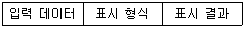
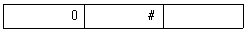
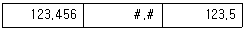
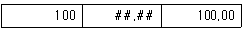
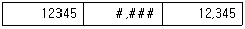
(정답률: 68%)
27. 다음 중 데이터가 입력된 셀에서 채우기 핸들을 드래그 하여 데이터를 채우는 경우에 대한 설명으로 옳은 것은?
- 일반적인 문자 데이터나 날짜 데이터는 그대로 복사되어 채워진다.
- 1개의 숫자와 문자가 조합된 텍스트 데이터는 숫자만 1씩 증가하고 문자는 그대로 복사되어 채워진다.
- 숫자 데이터는 1씩 증가하면서 채워진다.
- 숫자가 입력된 두 셀을 블록 설정하여 채우기 핸들을 드래그하면 두 숫자가 반복하여 채워진다.
(정답률: 62%)
28. 다음 중 셀 포인터의 이동 작업에 대한 설명으로 옳지 않은 것은?
- <Alt> + <Page Down> 키를 눌러 현재 시트를 기준으로 오른쪽에 있는 다음 시트로 이동한다.
- 이름 상자에 셀 주소를 입력한 후 <Enter> 키를 눌러 원하는 셀의 위치로 이동한다.
- <Ctrl> + <Home> 키를 눌러 [A1] 셀로 이동한다.
- <Home> 키를 눌러 해당 행의 A 열로 이동한다.
(정답률: 63%)
29. 다음 중 아래 시트의 [A9] 셀에 수식 '=OFFSET(B3,-1,2)'을 입력한 경우 결과값은?
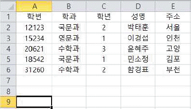
- 윤혜주
- 서울
- 고양
- 박태훈
(정답률: 77%)
30. 다음 중 [개발 도구] 탭의 [컨트롤] 그룹에 대한 설명으로 옳지 않는 것은?
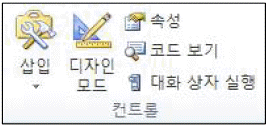
- 컨트롤 종류에는 텍스트 상자, 목록 상자, 옵션 단추, 명령 단추 등이 있다.
- ActiveX 컨트롤은 양식 컨트롤 보다 다양한 이벤트에 반응할 수 있지만, 양식 컨트롤보다 호환성은 낮다.
- [디자인 모드] 상태에서는 양식 컨트롤과 ActiveX 컨트롤 모두 매크로 등 정해진 동작은 실행하지 않지만 컨트롤의 선택, 크기 조절, 이동 등의 작업을 할 수 있다.
- 양식 컨트롤의 '단추(양식 컨트롤)'를 클릭하거나 드래그해서 추가하면 [매크로 지정] 대화상자가 자동으로 표시된다.
(정답률: 57%)
31. 다음 중 아래의 프로시저가 실행된 후 [A1] 셀에 입력되는 값으로 옳은 것은?
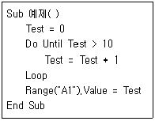
- 10
- 11
- 0
- 55
(정답률: 73%)
32. 다음 중 아래 시트에 대한 각 수식의 결과값이 나머지 셋과 다른 것은?
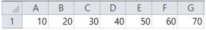
- =SMALL(A1:G1,{3})
- =AVERAGE(SMALL(A1:G1,{1;2;3;4;5}))
- =LARGE(A1:G1,{5})
- =SMALL(A1:G1,COLUMN(D1))
(정답률: 68%)
33. 아래 시트에서 주민등록번호의 여덟 번째 문자가 '1' 또는 '3'이면 '남', '2' 또는 '4'이면 '여'로 성별 정보를 알 수 있다. 다음 중 성별을 계산하기 위한 [D2] 셀의 수식으로 옳지 않은 것은? (단, [F2:F5] 영역은 숫자 데이터임)
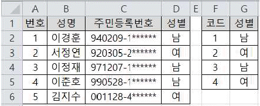
- =IF(OR(MID(C2, 8, 1)="2", MID(C2, 8, 1)="4"), "여", "남")
- =CHOOSE(VALUE(MID(C2, 8, 1)), "남", "여", "남", "여")
- =VLOOKUP(VALUE(MID(C2, 8, 1)), $F$2:$G$5, 2, 0)
- =IF(MOD(VALUE(MID(C2, 8, 1)), 2)=0, "남", "여")
(정답률: 51%)
34. 아래 시트에서 국적별 영화 장르의 편수를 계산하기 위해 [B12] 셀에 작성해야 할 배열수식으로 옳지 않은 것은?
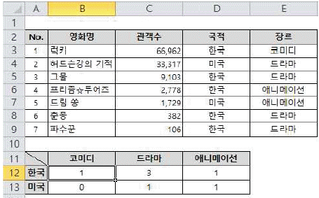
- {=SUM(($D$2:$D$9=$A12) * ($E$2:$E$9=B$11))}
- {=SUM(IF($D$2:$D$9=$A12, IF($E$2:$E$9=B$11, 1)))}
- {=COUNT(($D$2:$D$9=$A12) * ($E$2:$E$9=B$11))}
- {=COUNT(IF(($D$2:$D$9=$A12) * ($E$2:$E$9=B$11), 1))}
(정답률: 41%)
35. 다음 중 이름 상자에 대한 설명으로 옳지 않은 것은?
- <Ctrl> 키를 누르고 여러 개의 셀을 선택한 경우 마지막 선택한 셀 주소가 표시된다.
- 셀이나 셀 범위에 이름을 정의해 놓은 경우 이름이 표시된다.
- 차트가 선택되어 있는 경우 차트의 종류가 표시된다.
- 수식을 작성 중인 경우 최근 사용한 함수 목록이 표시된다.
(정답률: 54%)
36. 다음 중 엑셀의 화면 확대/축소 작업에 관한 설명으로 옳지 않은 것은?
- 문서의 확대/축소는 10%에서 400%까지 설정할 수있다.
- 설정한 확대/축소 배율은 통합 문서의 모든 시트에 자동으로 적용된다.
- 화면의 확대/축소는 단지 화면에서 보이는 상태만을 확대/축소하는 것으로 인쇄 시 적용되지 않는다.
- <Ctrl> 키를 누른 채 마우스의 스크롤을 위로 올리면 화면이 확대되고, 아래로 내리면 화면이 축소된다.
(정답률: 75%)
37. 다음 중 인쇄 기능에 대한 설명으로 옳지 않은 것은?
- 기본적으로 워크시트의 눈금선은 인쇄되지 않으나 인쇄되도록 설정할 수 있다.
- [페이지 설정] 대화상자의 [시트] 탭에서 '간단하게 인쇄'를 선택하면 셀의 테두리를 포함하여 인쇄할 수 있다.
- [인쇄 미리 보기 및 인쇄] 화면을 표시하는 단축키는 <Ctrl> + <F2> 이다.
- [인쇄 미리 보기 및 인쇄]에서 '여백 표시'를 선택한 경우 마우스로 여백을 변경할 수 있다.
(정답률: 69%)
38. 다음 중 차트 도구의 [데이터 선택]에 대한 설명으로 옳지 않은 것은?
- [차트 데이터 범위]에서 차트에 사용하는 데이터 전체의 범위를 수정할 수 있다.
- [행/열 전환]을 클릭하여 가로 (항목) 축의 데이터 계열과 범례 항목(계열)을 바꿀 수 있다.
- 범례에서 표시되는 데이터 계열의 순서를 바꿀 수 없다.
- 데이터 범위 내에 숨겨진 행이나 열의 데이터도 차트에 표시할 수 있다.
(정답률: 62%)
39. 다음 중 아래 데이터를 차트로 작성하여 사원별로 각 분기의 실적을 비교·분석하려는 경우 가장 비효율적인 차트는?
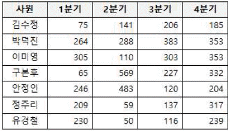
- 누적 세로 막대형 차트
- 표식이 있는 꺾은선형
- 원형 대 가로 막대형
- 묶은 가로 막대형
(정답률: 68%)
40. 다음 중 셀 영역을 선택한 후 상태 표시줄의 바로 가기 메뉴인 [상태 표시줄 사용자 지정]에서 선택할 수 있는 자동 계산에 해당되지 않는 것은?
- 선택한 영역 중 숫자 데이터가 입력된 셀의 수
- 선택한 영역 중 문자 데이터가 입력된 셀의 수
- 선택한 영역 중 데이터가 입력된 셀의 수
- 선택한 영역의 합계, 평균, 최소값, 최대값
(정답률: 64%)
3과목: 데이터베이스 일반
41. 다음 중 Access 파일에 암호를 설정하는 방법으로 옳은 것은?
- [데이터베이스 압축 및 복구] 도구에서 파일 암호를 설정할 수 있다.
- 데이터베이스를 단독 사용 모드(단독으로 열기)로 열어야 파일 암호를 설정할 수 있다.
- 데이터베이스를 MDE 형식으로 저장한 후 파일을 열어야 파일 암호를 설정할 수 있다.
- [Access 옵션] 창의 보안 센터에서 파일 암호를 설정할 수 있다.
(정답률: 52%)
42. 다음 중 데이터 보안 및 회복, 무결성, 병행 수행 제어 등을 정의하는 데이터베이스 언어로 데이터베이스 관리자가 데이터 관리를 목적으로 주로 사용하는 언어는?
- 데이터 제어어(DCL)
- 데이터 부속어(DSL)
- 데이터 정의어(DDL)
- 데이터 조작어(DML)
(정답률: 70%)
43. 다음 중 SQL 질의에 대한 설명으로 옳지 않은 것은?
- ORDER BY절 사용 시 정렬방식을 별도로 지정하지 않으면 기본 값은 'DESC'로 적용된다.
- GROUP BY절은 특정 필드를 기준으로 그룹화 하여 검색할 때 사용한다.
- FROM절에는 테이블 또는 쿼리 이름을 지정하며, WHERE절에는 조건을 지정한다.
- SELECT DISTINCT문을 사용하면 중복 레코드를 제거할 수 있다.
(정답률: 71%)
44. 다음 중 보고서의 그룹화 및 정렬에 대한 설명으로 옳지 않은 것은?
- '그룹'은 머리글과 같은 소계 및 요약 정보와 함께 표시되는 레코드의 모음으로 그룹 머리글, 세부 레코드 및 그룹 바닥글로 구성된다.
- 그룹화 할 필드가 날짜 데이터이면 전체 값(기본), 일, 주, 월, 분기, 연도 중 선택한 기준으로 그룹화 할 수 있다.
- Sum 함수를 사용하는 계산 컨트롤을 그룹 머리글에 추가하면 현재 그룹에 대한 합계를 표시할 수 있다.
- 필드나 식을 기준으로 최대 5단계까지 그룹화 할 수 있으며, 같은 필드나 식은 한 번씩만 그룹화 할 수 있다.
(정답률: 70%)
45. 다음 중 보고서 작업 시 필드 목록 창에서 선택한 필드를 본문 영역에 추가할 때 자동으로 생성되는 컨트롤은?
- 단추
- 텍스트 상자
- 하이퍼링크
- 언바운드 개체 틀
(정답률: 63%)
46. 다음 중 보고서의 보기 형태에 대한 설명으로 옳지 않은 것은?
- [보고서 보기]는 출력되는 보고서를 화면 출력용으로 보여주며 페이지를 구분하여 표시한다.
- [디자인 보기]에서는 보고서에 삽입된 컨트롤의 속성, 맞춤, 위치 등을 설정할 수 있다.
- [레이아웃 보기]는 출력될 보고서의 레이아웃을 보여주며 컨트롤의 크기 및 위치를 변경할 수도 있다.
- [인쇄 미리 보기]에서는 종이에 출력되는 모양을 표시 하며 인쇄를 위한 페이지 설정이 용이하다.
(정답률: 48%)
47. 다음 중 아래 보고서에 대한 설명으로 옳지 않은 것은?
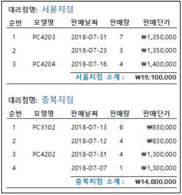
- '모델명' 필드를 기준으로 그룹이 설정되어 있다.
- '모델명' 필드에는 '중복 내용 숨기기' 속성을 '예'로 설정하였다.
- 지점별 소계가 표시된 텍스트 상자는 그룹 바닥글에 삽입하였다.
- 순번은 컨트롤 원본을 '=1' 로 입력한 후 '누적 합계' 속성을 '그룹'으로 설정하였다.
(정답률: 65%)
48. 다음 중 아래 <학생> 테이블에 대한 SQL문의 실행 결과로 옳은 것은?
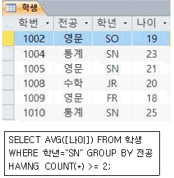
- 21
- 22
- 23
- 24
(정답률: 59%)
49. 다음 중 선택 쿼리에서 사용자가 지정한 패턴과 일치하는 데이터를 찾고자 할 때 사용되는 연산자는?
- Match
- Some
- Like
- Any
(정답률: 68%)
50. 다음 중 아래 SQL문으로 생성된 테이블에서의 레코드 작업에 대한 설명으로 옳지 않은 것은? (단, 고객과 계좌 간의 관계는 1:M이다.)
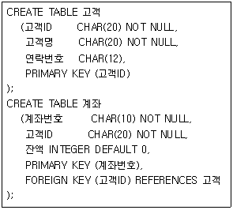
- <고객> 테이블에서 '고객ID' 필드는 동일한 값을 입력할 수 없다.
- <계좌> 테이블에서 '계좌번호' 필드는 반드시 입력해야 한다.
- <고객> 테이블에서 '연락번호' 필드는 원하는 값으로 수정하거나 생략할 수 있다.
- <계좌> 테이블에서 '고객ID' 필드는 동일한 값을 입력할 수 없다.
(정답률: 58%)
51. 다음 중 테이블에서 입력 마스크를 “LA09?”로 설정한 경우 입력할 수 없는 값은?
- AA111
- A11
- AA11
- A111A
(정답률: 50%)
52. 다음 중 아래 <고객>과 <구매리스트> 테이블 관계에 참조 무결성이 항상 유지되도록 설정할 수 없는 경우는?
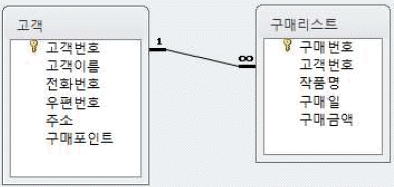
- <고객> 테이블의 '고객번호' 필드 값이 <구매리스트> 테이블의 '고객번호' 필드에 없는 경우
- <고객> 테이블의 '고객번호' 필드 값이 <구매리스트> 테이블의 '고객번호' 필드에 하나만 있는 경우
- <구매리스트> 테이블의 '고객번호' 필드 값이 <고객> 테이블의 '고객번호' 필드에 없는 경우
- <고객> 테이블의 '고객번호' 필드 값이 <구매리스트> 테이블의 '고객번호' 필드에 두 개 이상 있는 경우
(정답률: 55%)
53. 다음 중 외부 데이터 가져오기 기능에 대한 설명으로 옳지 않은 것은?
- 텍스트 파일을 가져와 기존 테이블의 레코드로 추가하려는 경우 기본 키에 해당하는 필드의 값들이 고유한 값이 되도록 데이터를 수정하며 가져올 수 있다.
- Excel 워크시트에서 정의된 이름의 영역을 Access의 새 테이블이나 기존 테이블에 데이터 복사본으로 만들 수있다.
- Access에서는 한 테이블에 256개 이상의 필드를 지원하지 않으므로 원본 데이터는 열의 개수가 255개를 초과하지 않아야 한다.
- Excel 파일을 가져오는 경우 한 번에 하나의 워크시트만 가져올 수 있으므로 여러 워크시트에서 데이터를 가져오려면 각 워크시트에 대해 가져오기 명령을 반복해야 한다.
(정답률: 39%)
54. 다음 중 위쪽 구역에 데이터시트를 표시하는 열 형식의 폼을 만들고, 아래쪽 구역에 선택한 레코드에 대한 정보를 수정하거나 입력할 수 있는 데이터시트 형식의 폼을 자동으로 만들어 주는 도구는?
- 폼
- 폼 분할
- 여러 항목
- 폼 디자인
(정답률: 67%)
55. 다음 중 이벤트 프로시저에서 쿼리를 실행 모드로 여는 명령은?
- DoCmd.OpenQuery
- DoCmd.SetQuery
- DoCmd.QueryView
- DoCmd.QueryTable
(정답률: 75%)
56. 다음 중 폼의 구성요소에 대한 설명으로 옳지 않은 것은?
- 폼 머리글은 인쇄할 때 모든 페이지의 상단에 매번 표시된다.
- 하위 폼은 폼 안에 있는 또 하나의 폼을 의미한다.
- 폼 바닥글은 폼 요약 정보 등과 같이 각 레코드에 동일하게 표시될 정보가 입력되는 구역이다.
- 본문은 사용할 실제 내용을 입력하는 구역으로 폼 보기 형식에 따라 하나의 레코드만 표시하거나 여러 개의 레코드를 표시한다.
(정답률: 62%)
57. 다음 중 폼 작성에 관한 설명으로 옳지 않은 것은?
- 여러 개의 컨트롤을 선택하여 자동 정렬할 수 있다.
- 컨트롤의 탭 순서는 자동으로 화면 위에서 아래로 설정된다.
- 사각형, 선 등의 도형 컨트롤을 삽입할 수 있다.
- 컨트롤 마법사를 사용하여 폼을 닫는 매크로를 실행시키는 단추를 만들 수 있다.
(정답률: 58%)
58. 다음 중 관계형 데이터베이스의 조인(JOIN)에 대한 설명으로 옳지 않은 것은?
- 쿼리에 여러 테이블을 포함할 때는 조인을 사용하여 원하는 결과를 얻을 수 있다.
- 내부 조인은 조인되는 두 테이블에서 조인하는 필드가 일치하는 행만을 반환하려는 경우에 사용한다.
- 외부 조인은 조인되는 두 테이블에서 공통 값이 없는 데이터를 포함할지 여부를 지정할 수 있다.
- 조인에 사용되는 기준 필드의 데이터 형식은 다르거나 호환되지 않아도 가능하다.
(정답률: 64%)
59. 다음 중 폼 바닥글의 텍스트 상자의 컨트롤 원본으로 <사원> 테이블에서 직급이 '부장'인 레코드들의 급여 평균을 구하는 함수식으로 옳은 것은?
- =DAVG(“[급여]”, “[사원]”, “[직급]='부장'”)
- =DAVG(“[사원]”, “[급여]”, “[직급]='부장'”)
- =AVG(“[급여]”, “[사원]”, “[직급]='부장'”)
- =AVG(“[사원]”, “[급여]”, “[직급]='부장'”)
(정답률: 50%)
60. 다음 중 액세스의 매크로에 대한 설명으로 옳지 않은 것은?
- 반복적으로 수행되는 작업을 자동화하여 간단히 처리할 수 있도록 하는 기능이다.
- 매크로 함수 또는 매크로 함수 집합으로 구성되며, 각 매크로 함수의 수행 방식을 제어하는 인수를 추가할 수 있다.
- 매크로를 이용하여 폼을 열고 닫거나 메시지 박스를 표시할 수도 있다.
- 매크로는 주로 컨트롤의 이벤트에 연결하여 사용하며, 폼 개체 내에서만 사용할 수 있다.
(정답률: 73%)